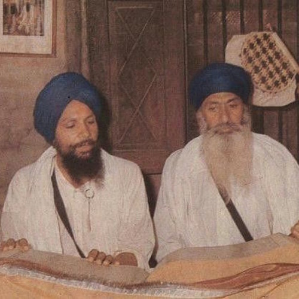
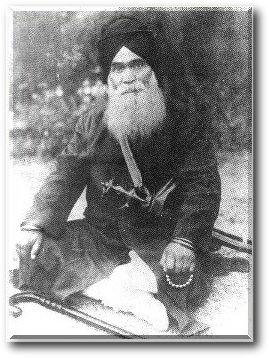

This folder has all things that I scraped from akj.org. One file takes all the audiobooks and downloads all of them. Another file downloads all the Keertan when you put the name of a Keertani
My attempt at tic tac toe
Instead of downloading each individual track from gurmatveechar.com, you can now download folders. If you put a link, from gurmatveechar.com that has all the files you would like to download, into this program, it will download all the files for you automaticlly.
Made a password generator.
This program will give you back the password that was generated through the password generator.
